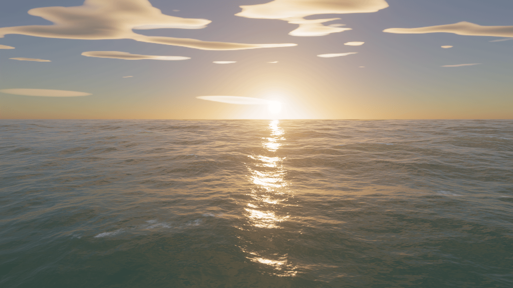
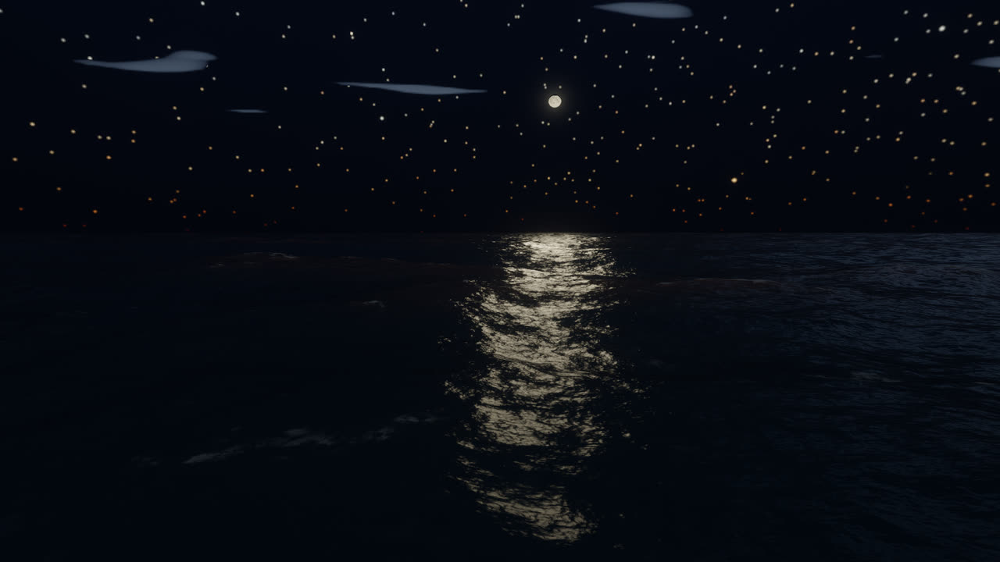
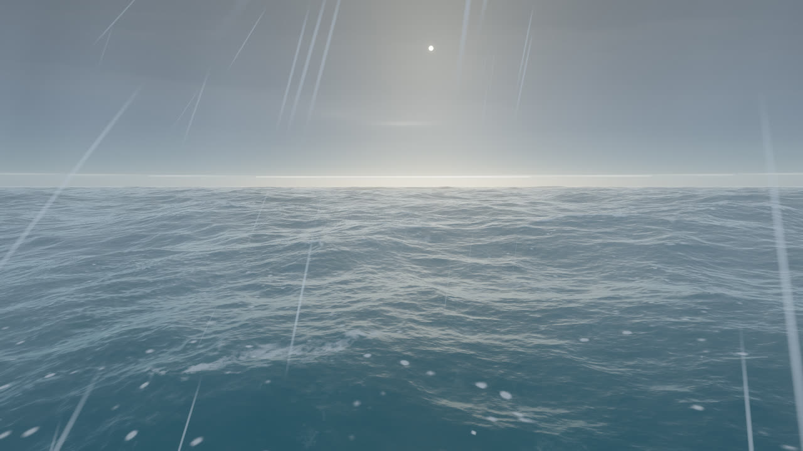
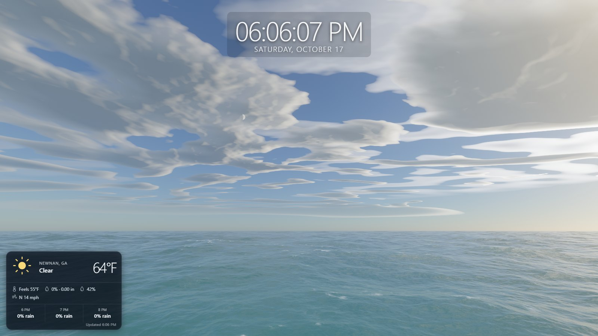

Thirty-second look
Thirty seconds captured from the running app: sunrise, a storm, the picture-frame clock and weather, and a moonlit sea. Press play to hear the app's own surf, rain, and thunder.
Sixty-second time lapse
Sixty seconds of a time lapse at Newnan, Georgia, starting at 7:56 PM on October 18, 2026. The clock keeps the real time, and the weather card stays at the top left. Press play and use the sound control to hear the water.
Screenshots




The renderer and documentation are in the repository. It extends web-ocean by Maksymilian Dendura.